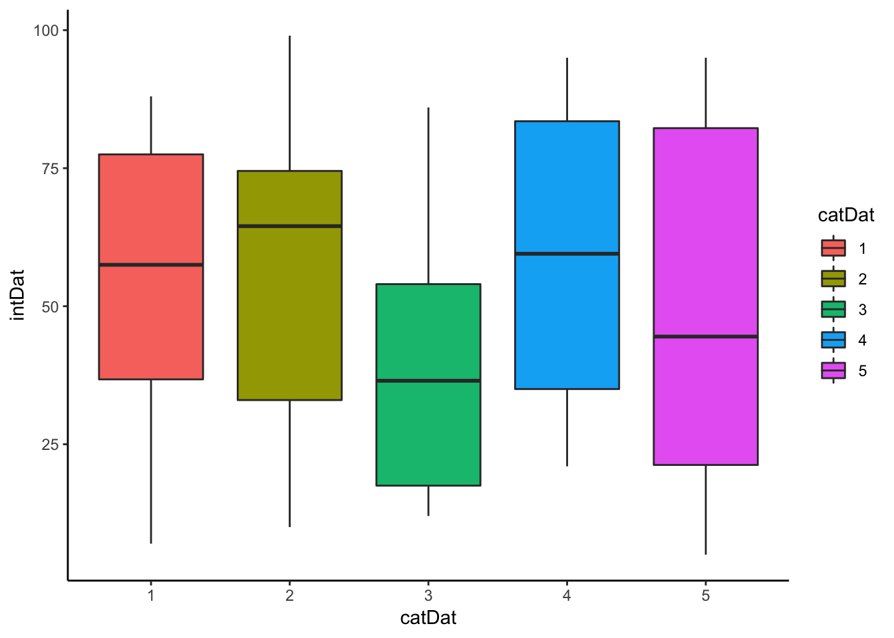
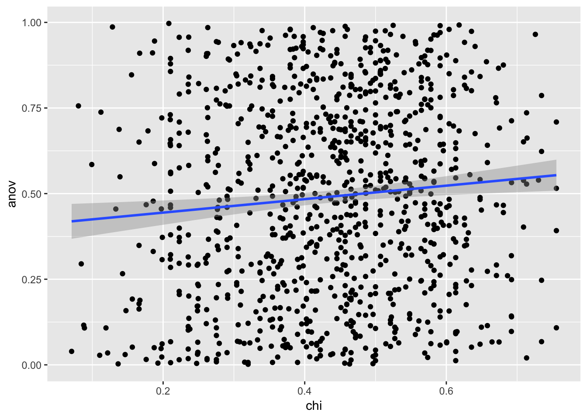
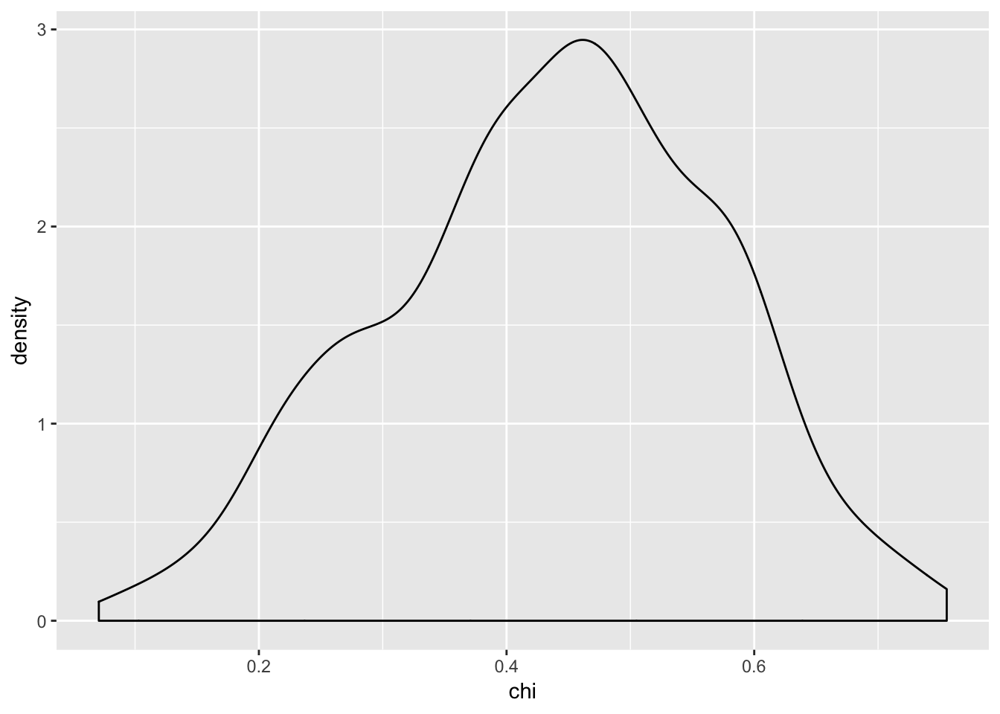
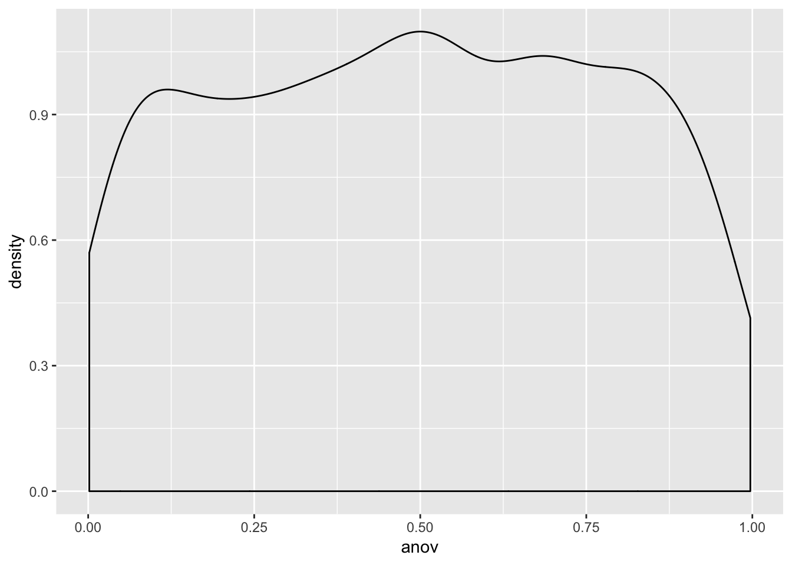
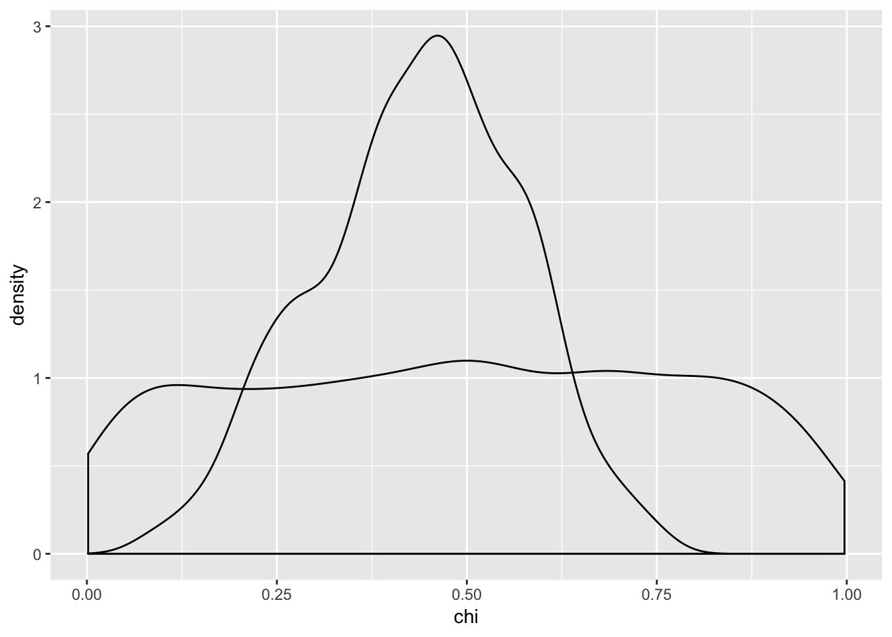
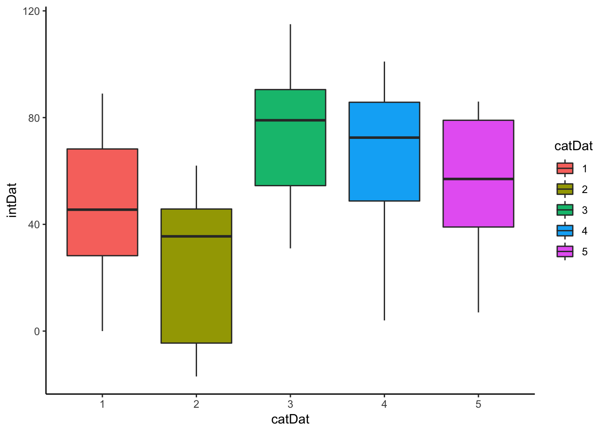
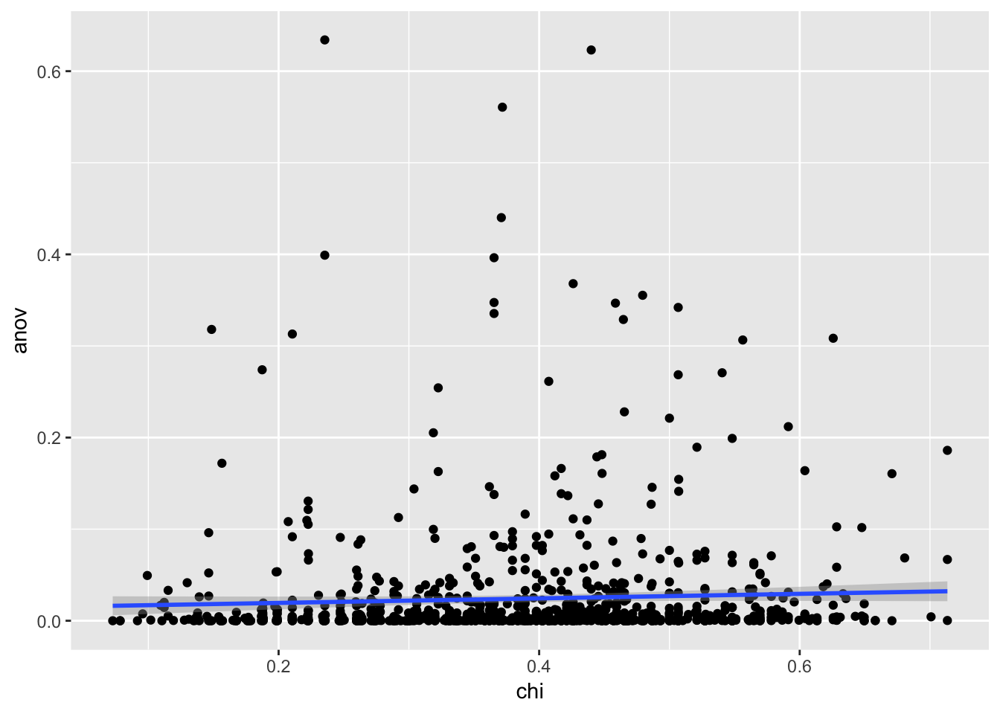
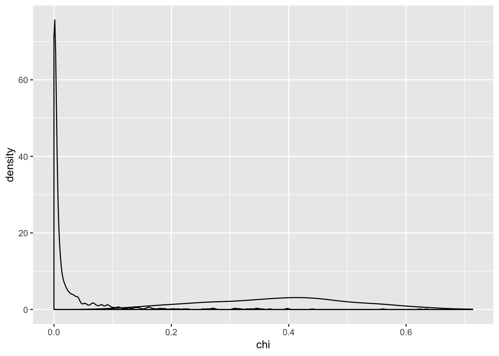
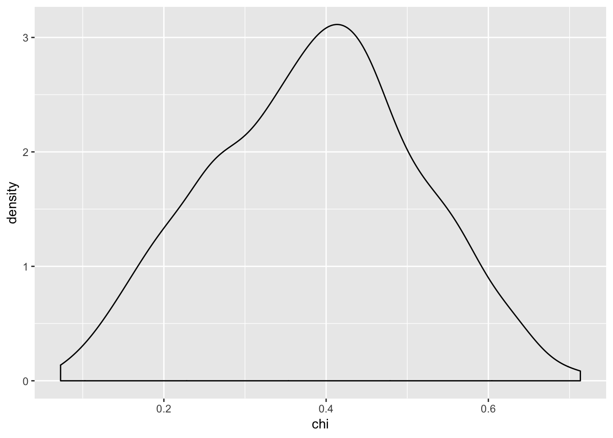
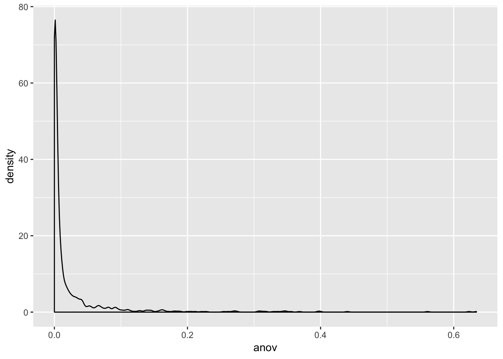

Accidental ChiSq
Chelsea Parlett

One of my students ran a chi-square test with a continuous (but integer) outcome and categorical predictor. They emailed me worried about the warning “In chisq.test(t) : Chi-squared approximation may be incorrect”. I told them they should run an ANOVA instead since their outcome was continuous (yes, there may be concerns because the data is integer/count data. A poisson model may have been better, but we didn’t cover those in the class.) Their response to me was something along the lines of:
Oh don’t worry, the chi-square code still ran so it’s fine.
Which made me feel like I failed them, since they didn’t learn from me that it’s not whether the code ran, but whether you used an appropriate test.
So, to make up for it for future students, I wrote this. See this simulation that shows why running a chi-square test when you should have run an ANOVA is not a good idea.
Null Case
Simulation Function
library(ggplot2)## Warning: package 'ggplot2' was built under R version 3.4.4CHIANOVA <- function(ngroups = 5, pergroup = 12, plot = F){
intDat <- round(runif((ngroups*pergroup),1,100))
catDat <- factor(rep(1:ngroups,(60/5)))
df <- data.frame(intDat,catDat)
t <- xtabs(~intDat + catDat, data = df)
ch <- chisq.test(t)
m <- aov(intDat ~ catDat, data = df)
sm <- summary(m)
if (plot){
print(ggplot(df, aes(x = catDat, y = intDat)) + geom_boxplot(aes(fill = catDat)) + theme_classic())
}
return(list(chi = ch$p.value, anov = sm[[1]][["Pr(>F)"]][1]))
}Example of Simulation Run
examp <- CHIANOVA(plot = T) ## Running the Simulation
set.seed(123)
n <- 1000
ca <- data.frame(chi = 0, anov = 0)
for (i in 1:n){
k <- CHIANOVA()
ca <- rbind(ca,k)
}
ca <- ca[2:dim(ca)[1],]
head(ca)## chi anov
## 2 0.2752663 0.94383179
## 3 0.5824732 0.35307383
## 4 0.5427126 0.54559270
## 5 0.1378418 0.68759501
## 6 0.6919098 0.09748467
## 7 0.4859818 0.50135175Plots
ggplot(ca,aes(x = chi, y = anov)) + geom_point() + geom_smooth(method = "lm")
cor(ca)## chi anov
## chi 1.00000000 0.09304987
## anov 0.09304987 1.00000000chi_aov <- lm(anov~chi, data = ca)
summary(chi_aov)##
## Call:
## lm(formula = anov ~ chi, data = ca)
##
## Residuals:
## Min 1Q Median 3Q Max
## -0.52535 -0.24430 0.00169 0.23500 0.55619
##
## Coefficients:
## Estimate Std. Error t value Pr(>|t|)
## (Intercept) 0.40517 0.03042 13.319 < 2e-16 ***
## chi 0.19682 0.06666 2.952 0.00323 **
## ---
## Signif. codes: 0 '***' 0.001 '**' 0.01 '*' 0.05 '.' 0.1 ' ' 1
##
## Residual standard error: 0.2829 on 998 degrees of freedom
## Multiple R-squared: 0.008658, Adjusted R-squared: 0.007665
## F-statistic: 8.716 on 1 and 998 DF, p-value: 0.003227Density Plots of p-values
#distribution of p-values density, makes sense that the p-values for anova are skewed because there's a clear effect.
ggplot(ca,aes(x = chi)) + geom_density()
ggplot(ca,aes(x = anov)) + geom_density()
ggplot(ca) + geom_density(aes(x = chi)) + geom_density(aes(x = anov))
The density plot of the anova p-values is relatively flat, which is expected given a null effect. The density plot for the chi-square p-values is not flat, with a peak around 0.5. ## What did we learn?
In our simulation, there is a small positive correlation between the p-values you get when you run an ANOVA and chi-square test on data that has a continuous but integer outcome, and a categorical predictor when the null is TRUE.
However, the adjusted \(R^2\) value is incredibly low at ~ 0.009, indicating that knowing the p-value of the chi-square test on the data does not explain much of the variation in the p-value of the ANOVA test on the same data.
In layman’s terms, there’s not a strong relationship between the p-values you get with the two different tests. This makes sense since when you run a chi-square test, you treat your continuous/integer value as a categorical variable. Which is is not.
Alternative Case
Simulation Function
CHIANOVA2 <- function(ngroups = 5, pergroup = 12, plot = F){
intDat <- round(runif((ngroups*pergroup),1,100))
catDat <- factor(rep(1:ngroups,(60/5)))
df <- data.frame(intDat,catDat)
#creating a relationship
df[df$catDat == 1, "intDat"] <- df[df$catDat == 1,"intDat"] -5
df[df$catDat == 2,"intDat"] <- df[df$catDat == 2,"intDat"] -25
df[df$catDat == 3,"intDat"] <- df[df$catDat == 3,"intDat"] + 20
df[df$catDat == 4,"intDat"] <- df[df$catDat == 4,"intDat"] + 2
t <- xtabs(~intDat + catDat, data = df)
ch <- chisq.test(t)
m <- aov(intDat ~ catDat, data = df)
sm <- summary(m)
if (plot){
print(ggplot(df, aes(x = catDat, y = intDat)) + geom_boxplot(aes(fill = catDat)) + theme_classic())
}
return(list(chi = ch$p.value, anov = sm[[1]][["Pr(>F)"]][1]))
}Example of Simulation Run
examp <- CHIANOVA2(plot = T)
Running the Simulation
set.seed(123)
n <- 1000
ca <- data.frame(chi = 0, anov = 0)
for (i in 1:n){
k <- CHIANOVA2()
ca <- rbind(ca,k)
}
ca <- ca[2:dim(ca)[1],]
head(ca)## chi anov
## 2 0.2337785 4.776362e-03
## 3 0.5912555 4.387574e-03
## 4 0.4899230 5.786586e-03
## 5 0.1987483 6.079448e-05
## 6 0.4671540 2.377428e-03
## 7 0.5736945 4.157098e-02Plots
ggplot(ca,aes(x = chi, y = anov)) + geom_point() + geom_smooth(method = "lm")
cor(ca)## chi anov
## chi 1.00000000 0.04989023
## anov 0.04989023 1.00000000chi_aov <- lm(anov~chi, data = ca)
summary(chi_aov)##
## Call:
## lm(formula = anov ~ chi, data = ca)
##
## Residuals:
## Min 1Q Median 3Q Max
## -0.03191 -0.02370 -0.01939 -0.00720 0.61377
##
## Coefficients:
## Estimate Std. Error t value Pr(>|t|)
## (Intercept) 0.014516 0.006365 2.281 0.0228 *
## chi 0.024775 0.015700 1.578 0.1149
## ---
## Signif. codes: 0 '***' 0.001 '**' 0.01 '*' 0.05 '.' 0.1 ' ' 1
##
## Residual standard error: 0.06304 on 998 degrees of freedom
## Multiple R-squared: 0.002489, Adjusted R-squared: 0.00149
## F-statistic: 2.49 on 1 and 998 DF, p-value: 0.1149#distribution of p-values density, makes sense that the p-values for anova are skewed because there's a clear effect.
ggplot(ca,aes(x = chi)) + geom_density()
ggplot(ca,aes(x = anov)) + geom_density()
ggplot(ca) + geom_density(aes(x = chi)) + geom_density(aes(x = anov))
#distribution of p-values density, makes sense that the p-values for anova are skewed because there's a clear effect.
ggplot(ca,aes(x = chi)) + geom_density()
ggplot(ca,aes(x = anov)) + geom_density() ## What did we learn?
Again, there is a small positive correlation between the p-values you get when you run an ANOVA and chi-square test on data that has a continuous but integer outcome, and a categorical predictor when the null is FALSE.
We get a small adjusted \(R^2\) value here as well of ~ 0.002.
From our simulation here, it looks like regardless of the relationship between our two variables, running a chi-square test and an ANOVA will give you virtually unrelated p-values.
Conclusion
Don’t run a chi-square test when you should run an ANOVA, even if the code runs in R.